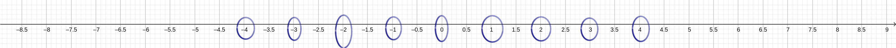
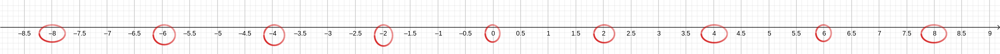
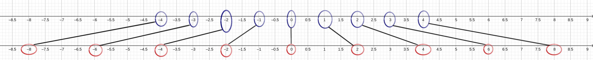

Vous vous souvenez du temps où être bon en maths signifait savoir placer
le 10 entre le 9 et le 11 sur une droite graduée? Et bien soyez ravis! Car
l'axe des abscisses et l'axe des ordonnées ce n'est finalement rien de plus que
ça.
Seul changement: on réserve un axe pour les nombres qui entrent dans la fonction
(c'est-à-dire les antécédents) et un autre axe pour les nombres qui sortent de la fonction
(c'est-à-dire les images).
L'axe que l'on réserve pour les antécédents est appelé l'axe des abscisses et l'axe
qu'on réserve pour les images est appelé l'axe des ordonnées.
Pourquoi les axes du repère sont-ils perpendiculaires?
Imaginons un instant que nous ne savons pas qu'il est possible de mettre les axes d'un repère
à la perpendiculaire.
Pour comprendre notre problème nous allons utiliser une fonction, la fonction qui donne le double de tout nombre
qu'on y rentre (c'est-à-dire, de tout antécédent.)
Pour rappel, voici son écriture mathématique:
Nous allons y faire rentrer les nombres -4, -3, -2, -1, 0, 1, 2, 3 et 4.
En faisant le calcul de tête on sait que les images seront: -8, -6, -4, -2, 0, 2, 4, 6 et 8.
On entoure sur l'axe des abscisses tous les nombres qui rentrent dans la machine,
c'est-à-dire les antécédents. On a alors:

On fait la même chose avec les images sur l'axe des ordonnées:

Et voilà ce qu'on obtient quand on les superpose:

Je ne sais pas pour vous mais ce n'est pas ce qu'il y a de plus pratique à lire...
Il y a des traits dans tous les sens et on ne sait plus vraiment où en donner de tête.
Peut-être que cette façon de représenter la fonction des doubles a une utilité ailleurs
mais dans notre cas à nous c'est à en avoir la migraine!
Autre problème: supposons maintenant que je vous demande de trouver sans faire de calculs
(pas même dans votre tête) le double de 2.39? Vous pourriez faire le calcul de tête ou utiliser
une calculatrice et avoir la bonne réponse. Mais pensez qu'il existe des fonctions beaucoup plus compliquées que celle-ci.
Comme la fonction racine carrée, les fonctions inverses, etc. Et je vous assure que vous
n'aimeriez pas voir ce que donne un mathématicien au bout de sa vie ;)
Conclusion
Il serait bien utile d'avoir une façon de représenter les antécédents et les images d'une fonction
qui nous permette de lire directement, sur le graphique, des approximations. C'est ce que permet
le repère cartésien que vous avez déjà probablement vu: celui avec les axes qui se croisent.